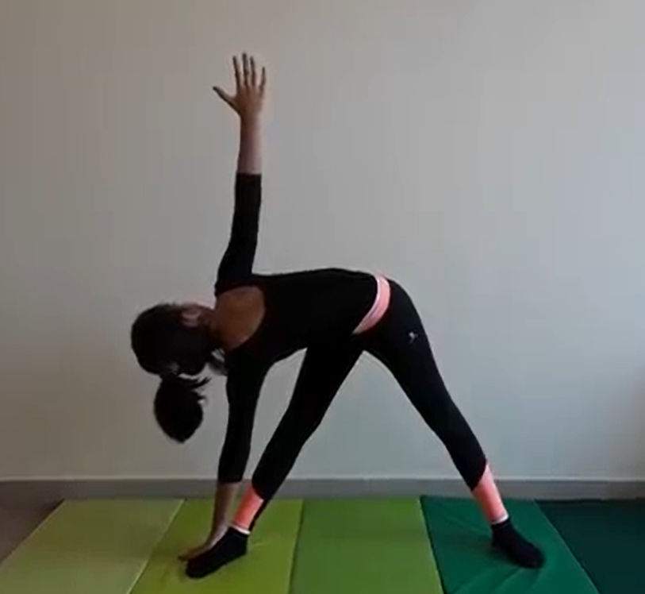

TRAINGLE POSE

Steps to perform Triangle Pose
- Begin standing, then lightly jump your feet apart to a wide position about three to four feet apart. Turn your left foot out and turn to face that direction. Take a slight bend in your left leg and raise your arms out on your sides, forming a “T” shape.
- Straighten through your left leg, then hinge and reach your torso over your left leg as your hips jut back. Rotate your left palm so it faces the ceiling, and gaze out over your left arm.
- Maintain a long, straight spine as you reach your left hand to the mat, placing it in front of your left foot. If you feel off balance, bring in your back leg closer to shorten your stance. Gaze towards your right arm, which should be extended overhead. Hold and repeat on the other side.